Chapter 3 Regression Analysis
Regression analysis is the quantitative framework that is most commonly used to establish whether outcomes are associated with individual, community, or environmental characteristics.
-Strength of relationships in conceptual models of health care utilization and costs.-Estimates effects of health interventions.-Enables prediction of future costs and outcomes.
3.1 Introduction
Question: How variables relate to one another in health services and health outcome research.
-Regression analysis is a body of statistical tools and techniques.-Traditional regression analysis (OLS) focuses on modeling the relationship between the mean of an outcome and subject characteristics.-Different regression techniques are appropriate depending on the specific question of interest and the data available.Example: Study trends in overweight and obese persons
-Linear regression analysis-Outcome: Body mass index (BMI)-Goal: Summarize the association between mean BMI and calendar year.Certain outcomes and types of questions call for specialized regression techniques.
Example: How the third quartile (75th percentile) or the highest decile (90th percentile) of BMI changes over time?
-Quantile regression would be appropriate instead of OLS.Example: proportion of the population that is overweight or obese,
-Logistic regression analysisExample: Studying health care utilization outcomes (e.g., numbers of hospitalizations and outpatient visits)
-Regression analysis for count outcomes such as Poisson or negative binomial regression.A prototype for regression analysis of medical expenditures:
-Research question: Association between chronic pain as assessed via survey questions and annual medical expenditures-Data source: Administrative records of the survey participants.-Fraction of the population does not use any medical care, the distribution of annual medical expenditures includes a portion of values that are zero.-Specialized regression technique is needed to handle this type of mixture.There are many other factors that may drive medical expenditures in addition to, and potentially in lockstep with, chronic pain.
In the chronic pain study, the stated goal is to capture the “incremental costs of medical care due to pain by comparing the costs of health care of persons with chronic pain to those who do not report chronic pain, controlling for health needs, demographic characteristics, and socioeconomic status” (emphasis added).
We discuss what is meant by “controlling for” variables in regression analysis.
3.2 Trends in Body Mass Index in the United States
The National Health and Nutrition Examination Survey (NHANES) is a program of studies designed to assess nutrition and health status among children and adults in the United States.
-Began in the early 1960s-Examines a nationally representative sample of about 5000 individuals every 2 years.-Collection of self-reported information about nutrition and health-Broad range of objective health measurements, including anthropometric measures and markers associated with chronic conditions like hypertension and diabetes.-The NHANES is the most authoritative source of data on overweight and obese persons in the United States.BMI is a measure of body fat based on height and weight
-body mass in kilograms divided by the square of the body height in meters.Standard adult BMI by the World Health Organization (WHO)
-30.0 ~ higher: Obese-25.0 ~ 29.9: Overweight-18.5 ~ 24.9: Normal or healthy weight-~ 18.5: UnderweightMany studies have been conducted of BMI trends in the United States, sounding an alarm about the obesity epidemic and its implications for chronic disease morbidity and mortality.
In this chapter, we use regression analysis to study data from NHANES surveys conducted in 1999–2000 and 2015–2016 to quantify the change in BMI over this interval and how it relates to age, sex, and race/ethnicity.
We focus on BMI in adults age 20–59 years since patterns of body weight and their drivers can differ markedly in younger and older persons.
3.3 Regression Overview
There are many ways to think about regression.
In essence, regression is a way of learning about mechanisms, or drivers, of an outcome.
The variable \(X\): Called the independent variable, covariate, risk factor, predictor, or feature.
The variable \(Y\): Called the dependent variable, response, or outcome.
Basic assumption: It is possible to clearly identify which variables are covariates and which are outcomes.
Key method: Univariate regression models which have a single outcome.
Key example: \(Y\) is BMI, and \(X\) represents a list of variables: age, sex, race/ethnicity, and calendar year.
Four distinct but connected ways of thinking about linear regression:
-To quantify association-To explain variability-To estimate the effect of an intervention-To predict future outcomes
3.3.1 Regression to Quantify Association
A way to quantify the extent to which a covariate (\(X\)) is associated with an outcome (\(Y\)).
The term “association”: generic relationship observed between \(X\) and \(Y\) that may or may not be causal.
This perspective zeros in on whether \(X\) is a driver of \(Y\), even though, in observational settings, establishing an association is not the same as establishing causality.
Linear regression provides a one-number summary of how the mean of \(Y (E(Y))\) changes as \(X\) changes.
A non-linear association can be studied by including covariates (e.g., \(log(X)\) or \(X^2\)) or by transforming the response \(Y\) (e.g., \(log(Y)\)) in the regression analysis.
3.3.2 Regression to Explain Variability
Understanding the variability of \(Y\).
Question: How much of the variability can be attributed to variation in values of \(X\)?
- In the case of linear regression, all of the variability in \(Y\) is driven by \(X\), then we expect the values of \(Y\) to fall on a line in the \(X–Y\) plane.
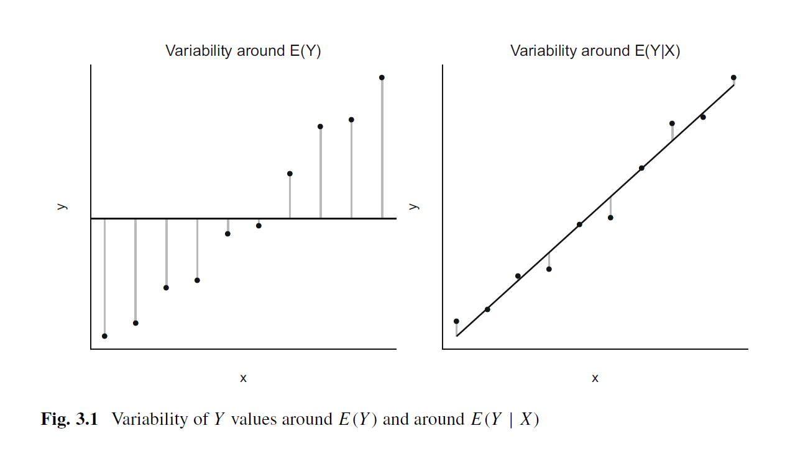
- The left panel also shows the variability of \(Y\) as deviations of the \(Y\) values from the horizontal line at the average \(Y\) value; this panel ignores any dependence of \(Y\) on \(X\) and amounts to assuming that there is no systematic component.
- The right panel gives more insight into how much of the variability in \(Y\) can be explained by a linear relationship with \(X\).
- We would infer from Fig. 3.1 that much of the variance of \(Y\) is explained by variation in \(X\) and there is little unexplained variance.
The modest unexplained variance may be attributable to other \(X\) variables and/or to random variation in the population.
However, in the setting of health care utilization and costs, set of variables \(X\) to be associated with \(Y\) but not to explain much of the variability in \(Y\).
3.3.3 Regression to Estimate the Effect of an Intervention
Association between a driver \(X\) and an outcome \(Y\), but this perspective specifically considers drivers that are interventions.
Intervention: Activity or process designed to change outcomes
-New treatment to improve cancer survival-Practice of wearing seatbelts to reduce automobile fatalitiesRegression analyses of interventions typically aim to quantify causal effects.
However, an association between \(X\) and \(Y\) based on observational data generally does not permit a causal interpretation.
-Do not control the value of the intervention (\(X\)).-Do not know why a specific subject selects their observed \(X\) value.Nevertheless, there are methods designed for causal inference that build on a regression framework.
3.3.4 Regression to Predict Outcomes
Predicting values of the response \(Y\) using information on the predictor(\(s\)) X.
Example: an insurance company trying to determine client premiums might want to use all available data on a new client to predict their expected annual medical expenditures.
If a linear regression model is predictive of \(Y\), then this is generally synonymous with \(X\) explaining a large portion of the observed variability in \(Y\).
-Association between \(Y\) and \(X\) exists.-However, the opposite is not necessarily true.-\(X\) may be strongly associated with \(Y\), but it may only account for a minority of the observed variability in \(Y\).In general, it is important to be clear about the objective of an analysis because this determines the type of regression analysis that may be appropriate.
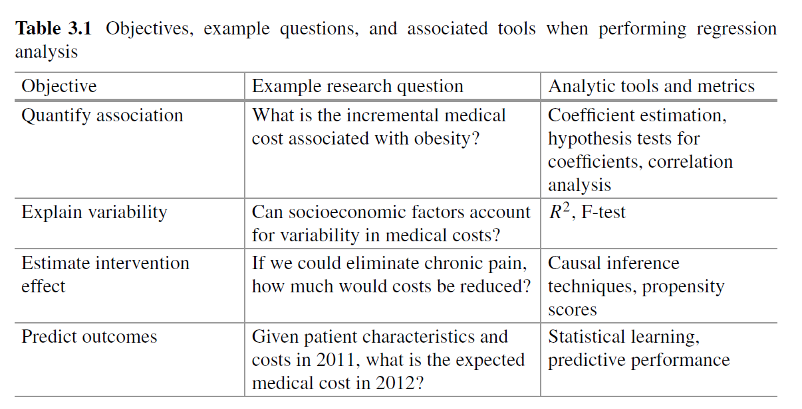
Same regression model and the same tools can often be used for several objectives.
Similarly, a model built for prediction may not be a good model for understanding the effect of an intervention.
3.4 An Organic View of Regression
At a very basic level, a regression model is just an organized collection of averages of outcomes within sub-populations defined by their covariate values.
For a single binary or categorical covariate, regression reduces to calculating the average of the outcome at each level of the covariate.
For a continuous covariate or when there are multiple covariates, calculating the average for each sub-population separately becomes tedious.
More importantly, the sample size for each sub-population may become very small, making the individual averages unreliable.
Regression modeling formulates the dependence of the outcome on the covariates in a way that addresses this problem.
We start with the simple case of a binary covariate and the perspective of explained variation.
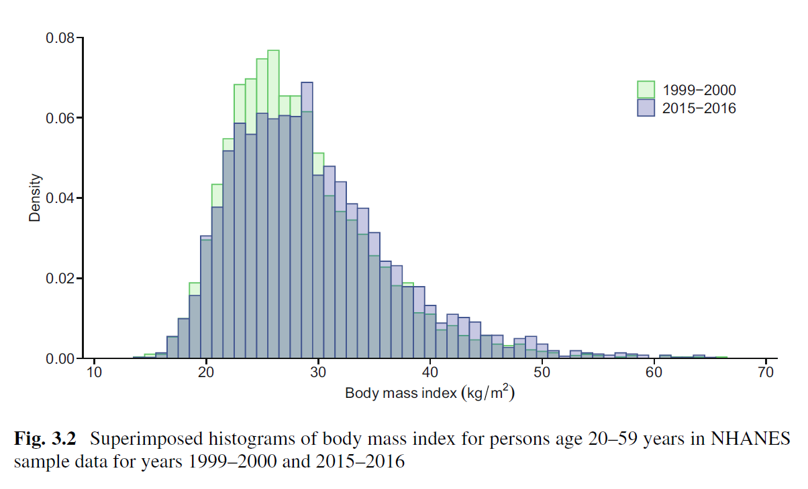
Figure 3.2 shows superimposed histograms of BMI levels in 1999–2000 and 2015–2016.
There is a shift toward higher BMI in 2015–2016 compared to 1999– 2000.
When ignoring year, average BMI is 29.1.
-The average BMI was 28.4 in 1999–2000 and 29.6 in 2015–2016, an increase of 1.2 units.What about the variability in BMI? When ignoring year, the variance is 49.8; this is based on subtracting the overall mean from each BMI value.
How much of this variability is due to differences between years?
To answer this question, we calculate the variance after subtracting the year-specific mean from each observed BMI and obtain 49.5.
Thus, by considering the sub-populations defined by year, the variance is reduced from 49.8 to 49.5, a very modest reduction of (49.8-49.5)/49.8=0.7%.
This result suggests that less than 1% of the variability in BMI levels is attributable to calendar year.
Indeed, many factors are involved in explaining population variability in BMI.
The fact that year explains only a small minority of the variability in BMI does not, however, imply that BMI and calendar year are not associated.
In fact, we will show that there is a statistically significant increase in BMI over time.
The distribution of BMI levels can also be calculated for sub-populations defined by variables with more than two categories, such as age.
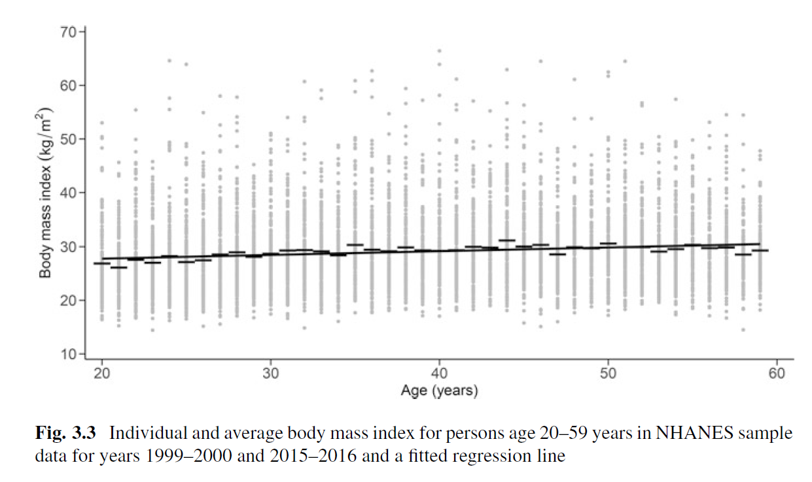
Figure 3.3 shows a scatterplot of age versus BMI, with line segments indicating average BMI levels for each single-age sub-population.
Several important properties of the data are apparent.
First, average BMI levels in the sub-populations show small fluctuations from one age to the next, probably due to the small sample size within each sub- population (compared to the total sample size).
Second, the average BMI tends to increase with age.
Third, a straight line reasonably approximates the increasing average BMI with age.
This third property motivates using the line to characterize how the average BMI changes across sub-populations defined by age.
This smooths out the fluctuations due to small sample sizes and more simply represents the relationship between age and BMI.
Both smoothing and simplicity are important goals when the covariate X takes many values or there are several covariates.
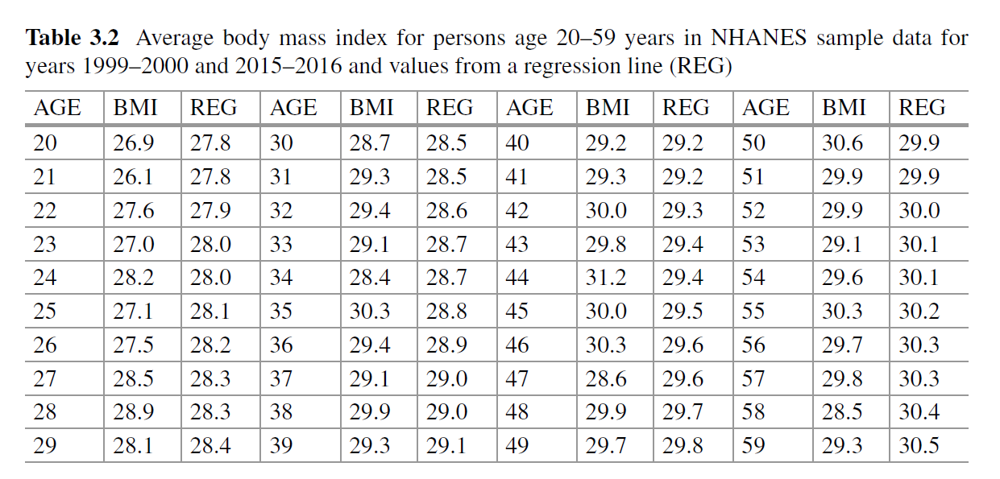
- Table 3.2 compares average BMI calculated for each age directly to those obtained by the regression line (REG) in Fig. 3.3:
\[ Mean BMI = 26.37 + 0.07 \times AGE. \]
As the table shows, the differences are relatively small, and it is much simpler to cite the regression equation to describe the relationship between age and BMI than to provide a detailed listing of averages.
The decision to replace the list of averages with a straight line is often not justified, however.
Whether and when to use linear regression bring us to a closer examination of the model and its assumptions.
3.5 The Linear Regression Equation and Its Assumptions
- The well-known formula for how Y depends on a set of \(k\) covariates \(X_1,\ldots , X_k\): the regression model is
\[ E(Y| X_1,\ldots, X_k) = \beta_0 + \beta_1X_1 +\cdots + \beta_kX_k. \]
The expression on the left, \(E(Y|X1,\ldots, X_k)\), indicates the mean of the outcome \(Y\) (e.g., BMI) in the sub-population defined by specific values for the covariates \(X_1,\ldots, X_k\) (e.g., age, sex, race/ethnicity, and calendar year).
The assumption of linearity is not trivial.
-Rarely holds in observational datasets.-Approximation for how the actual mean varies across sub-populations.The linearity assumption specifies that a one-unit increase in the covariate \(X_1\) will result in an increase of \(\beta_1\) units of the mean of \(Y\) regardless of the initial value of \(X_1\) and given any set of values for the other covariates \(X_2,\ldots ,X_k\).
A similar interpretation applies for all the other covariates including categorical covariate.
Even if transformations of \(X\), such as polynomials (e.g., X2) or other non-linear functions (e.g., \(log(X)\)), are added to the list of covariates, the model is still considered a linear model so long as these terms enter additively into the regression equation.
The objective: to estimate the coefficients \(\beta_1,\ldots ,\beta_k\) that quantify the relationships between the \(X\)s and \(Y\).
We isolate the relationship between \(X_i\) and \(Y\), and we say that we are adjusting or controlling for the other \(X\)s.
In practice, individuals in a sub-population rarely have identical values for the response variable.
The model for individual \(i\) is then:
\[ Y_i = \beta_0 + \beta_1X_{i1} + \cdots + \beta_kX_{ik} + \epsilon_i. \]
The \(\epsilon\) on the left-hand side of the previous equation that was used to indicate the mean (or expected value) of a sub-population is omitted, and a new term \(\epsilon_i\) is added to the right-hand side to reflect a subject-specific deviation from the sub-population mean \(\beta_0 +\beta_1X_{i1}+\cdots +\beta_kX_{ik}\).
Three key assumptions.
The random terms follow a normal distribution with mean zero.
This normal distribution has the same variance in all sub-populations.
The random parts of all observations are independent.
These three assumptions are not actually needed to validly fit the regression model.
So long as the systematic part is correctly specified, the estimates of the \(\beta\)s are valid and unbiased, regardless of whether assumptions 1–3 are satisfied.
But standard errors for the \(\beta\) estimates are based on assumptions about the random part
-If these don’t hold, the standard errors may not be valid.-May ultimately generate incorrect confidence intervals, p-values, and inferences.
3.6 Linear Regression Estimation and Interpretation
3.6.1 Estimation of the Regression Coefficients
- Two methods for estimating the \(\beta\)s:
Least squares
Maximum likelihood
Each method amounts to solving an optimization problem.
Least squares
-The problem is to identify the \(\beta\)s that minimize the sum of the squared differences between the responses \(Y\) and the systematic part of the regression equation, \(\beta_0+\beta_1X_1+\cdots+ \beta_kX_k\), which is a straight line.-Figure 3.1 demonstrates the least squares approach.-Note: the method does not use any of the assumptions regarding the random part of the regression equation; instead, it fits the regression line using only the systematic part.Maximum likelihood
-Exploit the random part of the model.-Maximum likelihood tries to determine the line \(\beta_0+\beta_1X_1+\cdots+ \beta_kX_k\) that is most plausible or most likely to have generated the observed \(Y\) values.-When the random part is normally distributed, the least squares estimates are identical to the maximum likelihood estimates.
3.6.2 Interpretation of the Regression Coefficients
- Table 3.3 provides the results from fitting a linear regression model to NHANES data for persons age 20–59 years in 1999–2000 and 2015–2016.
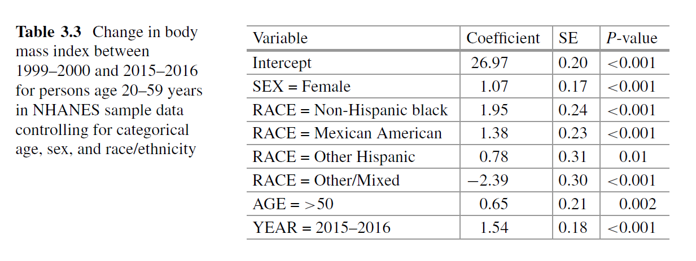
The outcome is BMI, and the main question is how this outcome has changed over time.
We have two time points, and the regression equation includes a binary variable SEX (with reference level male), a categorical variable RACE (with reference level non- Hispanic white) coded as a set of dummy variables, a binary variable AGE (with reference level 50 years), and a binary variable YEAR (with reference level 1999–2000).
Although we will show that assumptions of normality and constant variance are likely not satisfied for this regression model, we use it here to illustrate interpretation of the regression coefficients that comprise the systematic part of the model.
The intercept represents mean BMI at the reference level for all variables.
Thus, the regression analysis estimates that the mean BMI for non-Hispanic white men age 50 years in 1999–2000 was 26.97.
The coefficient for YEAR is 1.54, meaning that the average BMI increased by 1.54 units from the 1999–2000 survey to the 2015–2016 survey.
The 95% confidence interval for the increase in BMI during the 15 years examined is \(1.54 \pm 1.96 \times 0.18\), or 1.19 to 1.89.
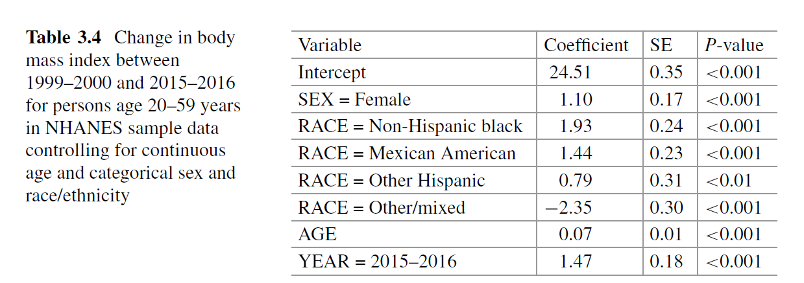
Table 3.4 shows the fitted regression model if age is coded as a continuous variable instead.
The model estimates a slightly smaller increase in mean BMI over time, about 1.47 units.
The regression intercept still represents mean BMI at the reference level for all categorical variables and, now that a continuous variable is included, when that variable is equal to zero.
For categorical or factor covariates, consideration should be given to the choice of reference level.
The reference level should be meaningful for the analysis and adequately represented in the sample. For race/ethnicity in this example, we used non-Hispanic white as the reference level.
Ordered categorical variables can sometimes be specified as continuous variables (e.g., by replacing household income brackets by their midpoints), but this will impose strict constraints that may not match the data (linear dependence on household brackets).
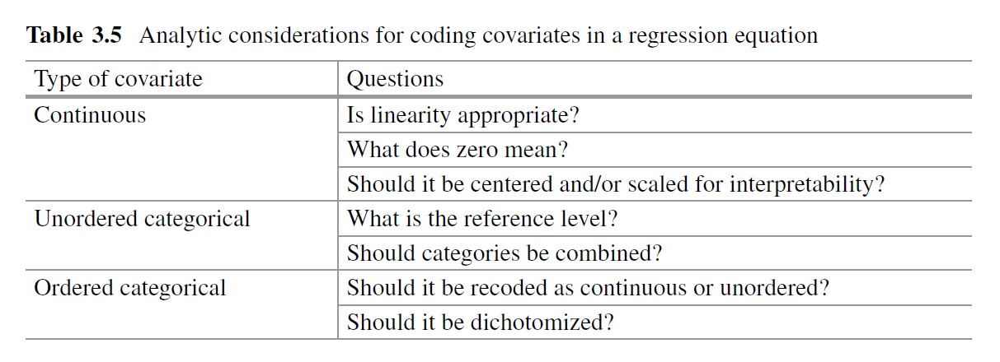
- Table 3.5 summarizes some important analytic considerations and principles when incorporating different types of variables in the regression equation.
3.6.3 Confounding
It is tempting to interpret the coefficient of a covariate as its causal effect on the outcome, meaning that changing the value of that covariate by one unit will result in a change of the outcome by the corresponding \(beta\) coefficient.
However, in observational data the covariate of interest is often associated with other covariates that vary together to affect the outcome.
-This phenomenon, called confounding, is an unavoidable problem whenever observational data are analyzed.-Formally, we define a covariate \(Z\) as being a confounder of the association between \(X\) and \(Y\) if \(Z\) affects both \(X\) and \(Y\).Confounding is a primary reason for why we must be very cautious when making causal inferences from observational data and why we always have to question whether there may be other explanations for any associations identified between a covariate and the outcome.
For clarity, suppose we are interested in the association between an outcome \(Y\) and a covariate \(X\).
-For example, \(Y\) may be BMI and \(X\) may be a binary indicator of regular physical exercise (PE), with \(X=1\) if yes and \(X=0\) if no.-In the NHANES sample data from 2015–2016, a question about weekly recreational exercise asked: “In a typical week do you do any vigorous-intensity sports, fitness, or recreational activities that cause large increases in breathing or heart rate like running or basketball for at least 10 min continuously?”-We use the response to this question as our PE variable.-It is well known that, as we age, we become less active and BMI tends to increase; thus AGE could be reasonably considered to be a confounder in our analysis because it affects both BMI and PE.-In the NHANES sample data, again restricted to ages 20–59 years, there is a significant negative correlation between AGE and PE and, as previously shown, a significant positive correlation between AGE and BMI.Running a simple linear regression of BMI on PE, we unsurprisingly find that average BMI is significantly lower for individuals who exercise, with the estimated coefficient of PE equal to 2.15.
If we intervene and convince all inactive individuals to engage in regular physical exercise, is it reasonable to expect a reduction of 2.15 units in average BMI?
-The problem with interpreting this association as a causal relationship is that AGE is lurking in the shadows.-As the PE indicator changes from 0 to 1, the corresponding sub-population becomes younger; the PE variable and the AGE variable change together.-Thus, in the simple linear regression with just PE as the lone covariate, the estimated association between BMI and PE is boosted by the (lurking) association between AGE and PE.When we include both PE and AGE in the model, the coefficient of PE is still negative and significant, but it is reduced in magnitude to -1.88.
The boost from the implicit effect of the younger sub- population is gone because the effect of PE is estimated keeping age constant.
When we interpret the coefficient of PE, we are now assessing only the effect of PE on BMI, adjusting or controlling for the effect of AGE.
This explanation assumes that the linear model is correct, and there are likely other confounders of the BMI-PE association, making causal interpretation on the basis of these few covariates a bit of a stretch.
Still, this example serves to illustrate the mechanics of confounder adjustment in multiple regression.
In observational studies, associations of interest are almost always subject to confounding, sometimes by multiple variables.
3.6.4 Moderation or Interaction
In the previous sections, an increase in mean BMI over time was assumed to be the same in all sub-populations.
But is the change in mean BMI over time indeed the same for younger as for older persons? Is it the same for all racial/ethnic groups?
This question brings us to the concept of effect modification, also called moderation or interaction.
Effect modification occurs when the association between a covariate \(X\) and an outcome \(Y\) differs according to the levels of another covariate (\(Z\)).
-We say that covariate \(Z\) modifies or moderates the association between \(X\) and \(Y\).-In the case where \(X\) is YEAR and \(Z\) is (categorical) AGE, we say that AGE modifies the association between YEAR and BMI if the change in BMI over time differs for younger versus older persons.There are at least two ways to learn about whether the association between YEAR and BMI is modified by AGE:
Fit two separate regression models corresponding to the two levels of AGE. In our example, this would yield one analysis for persons age 50 years and another analysis for persons age >50 years.
Fit a single regression model, but include an interaction term (i.e., the product of YEAR and AGE) in the linear model that already includes these covariates.
The first approach provides separate estimates of the association between \(X\) and \(Y\) within each subgroup defined by the levels of \(Z\).
-However, it also provides separate estimates of the regression coefficients for all other covariates in the model.-Not only is this approach potentially inefficient, it also does not provide a formal mechanism for testing whether the association between \(X\) and \(Y\) differs across the levels of \(Z\).Following Equation shows the regression equation for the second approach:
\[ E(Y) = \beta_0 + \beta_1YEAR + \beta_2AGE + \beta_3AGE \times YEAR. \]
- The interaction term is non-zero when both AGE and YEAR are equal to 1.
- It therefore contributes to \(E(Y)\) only for the older age group in 2015–2016.
- This means that, when we estimate the change in mean BMI from 1999–2000 to 2015– 2016, we end up with a different estimate for older than for younger persons.
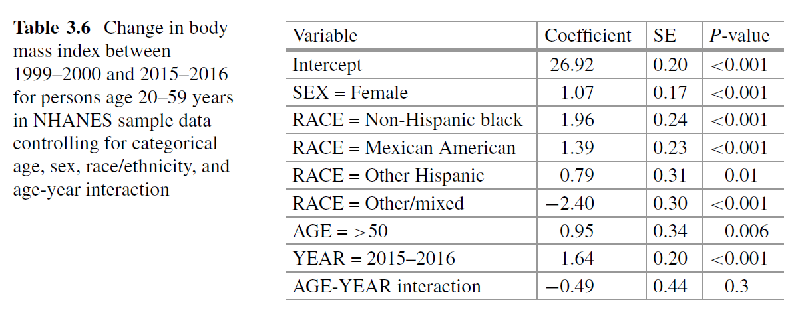
Table 3.6 Change in body mass index between 1999–2000 and 2015–2016 for persons age 20–59 years in NHANES sample data controlling for categorical age, sex, race/ethnicity, and age-year interaction
-Specifically, the change for younger persons is given by \(\beta_1\), and the change for older persons is given by \(\beta_1+\beta_3\).-Symmetrically, when we estimate the difference in mean BMI for older versus younger persons, we end up with a different estimate for 1999–2000 (\(\beta_2\)) than for 2015–2016 (\(\beta_2+\beta_3\)).-The same idea also applies when YEAR is continuous, in which case the interaction term implies a different slope of the corresponding regression line for older versus younger persons.Table 3.6 repeats the analysis in Table 3.3 but adds an interaction between AGE and YEAR.
The interaction term is negative; the estimated change in BMI from 1999–2000 to 2015–2016 is less for older than for younger individuals.
The global change over the 15-year period of 1.54 units presented in
Table 3.3 that does not include an interaction term is replaced here with a change of 1.64 units for younger and 1.64 0.49 1.15 units for older individuals.
Because the model implies that the change in mean BMI depends on AGE, we cannot interpret the coefficient of the YEAR variable as a stand-alone estimate of the change in mean BMI over time.
In general, when there is an interaction term in the model, the main effects (i.e., the coefficients of the covariates that go into the interaction) cannot be interpreted by themselves without qualification.
To understand why, recall that the coefficient of a single variable \(X\) is interpreted as the expected change in \(Y\) corresponding to a unit change in \(X\) holding values for all the other covariates in the model constant.
In the model of BMI with an AGE-YEAR interaction, we cannot change the values of AGE or YEAR by one unit while holding the interaction term (product of AGE and YEAR) fixed.
Therefore, we cannot interpret the coefficients of AGE and YEAR in the standard manner.
This is an important point to remember in general in regression analysis; interpretation of coefficients is conditional, and if we cannot conceive of changing one covariate in isolation while holding the others constant, then we may have to re-think our model or its interpretation.
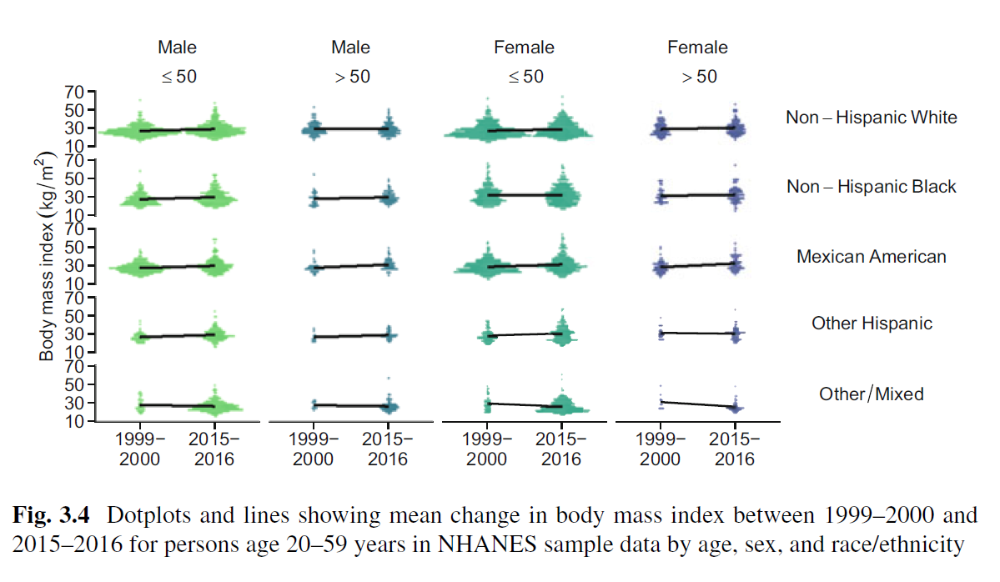
Figure 3.4 shows distributions of BMI levels using centered, stacked dots representing binned observations with lines connecting means for the two survey years within each age, sex, and race/ethnicity stratum.
A simple linear model without any interaction term assumes that all the slopes are equal, so that the effect of year is the same in all sub-populations.
The figure shows some deviation from that assumption, suggesting that changes in BMI levels over time may not be the same for all sub-populations.
3.7 Model Selection and Hypothesis Testing
Several models for mean BMI were fit in the previous section, and many other models could be considered.
How should we choose the final model? Then, once a final model is selected, how do we evaluate it and draw valid inferences?
There is a direct line from the objective of the analysis to the final model selected and the evaluation of its goodness.
If the objective is to test a pre-specified scientific hypothesis, decisions about which variables to include are appropriately guided by a conceptual model and should be made before examining the data.
If this is not possible, or if the analyst’s intent is to use the data to identify variables that are predictive, classical inference and hypothesis testing based on the fitted model are not warranted and can be seriously biased.
When we are addressing pre-specified hypotheses, the significance of a single covariate may be evaluated using the Wald test of the null hypothesis that a given coefficient (\(beta\)) is different from zero.
-In the BMI example, the coefficient of SEX is highly significant (p-value <0.001) in all regressions (Tables 3.3, 3.4, 3.5, and 3.6), but the coefficient of the interaction between AGE and YEAR is not significant at the conventional 5% level (Table 3.6).To evaluate the significance of two or more coefficients, we can employ the likelihood ratio test, a powerful approach for many statistical testing problems.
The likelihood ratio test is a way of determining whether adding RACE to the model adds more explanatory power than would be expected by chance.
-Note that the test is appropriate only when comparing two nested models, that is, when the restricted model can be obtained by setting one or more of the coefficients in the full model to zero.-The likelihood ratio test for linear regression with a normally distributed error term is equivalent to an F-test that compares the explained variation of the full and restricted models.-Specifically, it compares the residual or unexplained variance in the full model, \(Var_{res}(M_{full})\), to that in the restricted model, \(Var_{res}(M_{restricted})\).In some settings, we may be interested in comparing models that are not nested, e.g., when selecting the final model.
-For example, we may want to compare models that include log(AGE) instead of AGE or to compare a categorical coding of AGE versus a continuous coding of AGE. Of course, if we compare a model with many covariates to a model with only few, the former may perform better simply because it is more flexible and carries more explanatory power.To even the playing field when comparing less versus more flexible models, a common approach is to penalize the measured performance by the number of parameters used; as the model becomes more flexible, the penalty goes up.
Two likelihood-based statistics that take this approach are the Akaike Information Criterion (AIC) and the Bayesian Information Criterion (BIC).
These are scaled versions of the negative (maximized) likelihood for a given model (M), but each imposes a penalty for including more variables in the model. Specifically, these statistics are defined as:
\[ AIC = −2 log[L(M)]+ 2k \] \[ BIC = −2 log[L(M)]+ k log(n). \]
Here, \(k\) denotes the number of parameters in the model (e.g., in a linear model, \(k\) is equal to the number of \(\beta\)s plus 1 for \(\sigma^2\), the variance of the residuals, which is also estimated).
As the model becomes more complex and the likelihood increases, the first term decreases, but the second term increases.
The model that minimizes the sum of the two terms is preferred. Thus, the goal is to find the model that minimizes the AIC (or BIC).
The two statistics are similar, but the BIC imposes a more severe penalty for model complexity, so it may select simpler, more parsimonious models than the AIC in certain cases.
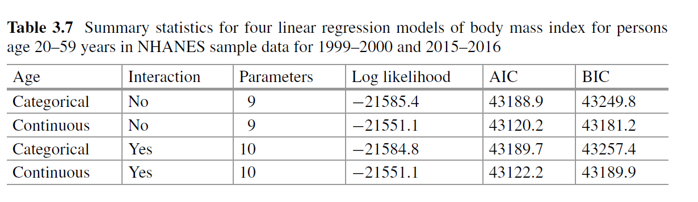
Table 3.7 shows the number of parameters, log likelihood, AIC, and BIC for the regression models with age coded as a categorical or as a continuous variable with and without the AGE-YEAR interaction term.
-Both the AIC and BIC are smallest for the model with age coded as a continuous variable without the AGE–YEAR interaction term.-Consequently, this model should be preferred among the four.One important thing to remember is that although the likelihood depends on the random part of the model, the model selection methods compare only the systematic part of the model, and not other aspects like the distribution of the response.
-In particular, all models that are compared must use the same response variable, so a model with BMI coded as continuous cannot be compared to a model with BMI coded as a binary response or a model that uses a transformation of BMI, such as log(BMI). Transformations are allowed only for the covariates (\(X\)s).-The models must also be based on the same set of observations.This is a point that is sometimes overlooked, particularly as some estimation software quietly drops observations with missing values for covariates, which may lead to different numbers of observations in models with different sets of covariates.
3.8 Checking Assumptions About the Random Part
Checking whether these assumptions are satisfied is important because their violation can lead to invalid inference, including incorrect confidence intervals and biased p-values.
Recall the three basic assumptions regarding the residuals:
Normal distribution
Variance is similar in all sub-populations
Independent
- The third assumption is usually verified on a case-by-case basis by scrutinizing whether the sample collection imposed dependencies between individuals, such as repeated measurements or observations that were clustered together (e.g., patients treated in the same hospital).
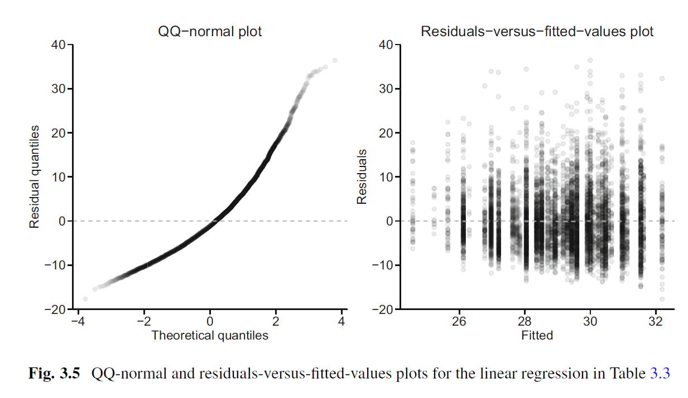
Figure 3.5 shows diagnostic plots to assess the normality and constant variance assumptions in the BMI example.
-The left panel shows a quantile-quantile or Q-Q normal plot, where the empirical quantiles of the model residuals are plotted against the theoretical quantiles expected under a normal model.-When the normality assumption holds, the QQ-normal plot shows a linear trend. Because the quantiles of the model residuals are not linearly related to the theoretical quantiles from a normal distribution, the assumption of normality is suspect for this model.-The right panel shows a scatterplot of residuals versus fitted values. Because the variance of the residuals increases for larger fitted values, the assumption of constant variance also appears to be violated in this model.Issues with non-normality diminish in large samples, but nonconstant variance may still impact the validity of hypothesis tests and p-values.
Standard errors for the \(\beta\)s also assume that the observations are independent.
This independence may not hold for clustered observations (e.g., body mass measurements taken from multiple members of a household) or observations that are taken close together in space or time (e.g., income measurements from a shared census tract).
When observations are not independent, the regression modeling approach can be extended to accommodate dependence even when the structure of the dependence is not known.
In general, misspecification of the model (e.g., incorrectly assuming an association is linear or that observations are independent) and omission of key covariates constitute the greatest threats to valid inference and prediction from a regression model.
3.9 Do I Have a Good Model? Goodness of Fit and Model Adequacy
The question of whether a model is “good” is tightly bound to the objective of the analysis.
To be sure, each of the objectives identified in this chapter requires that the model be correctly specified.
Yet different criteria emerge for evaluating model adequacy depending on how the model will be used.
In a hypothesis-driven analysis, there is a well-formed question that translates into a statistical hypothesis test, such as whether there is an increase in BMI over time.
So long as the assumptions for validity of the test are satisfied, we can feel comfortable that we have a “good” model. If, for example, we use the Wald test to address whether average BMI is higher in 2015–2016 than in 1999–2000, then the relevant coefficient estimate should be normally distributed with true standard error equal to that corresponding to a standard linear regression model.
Even if the data are not normal, the coefficient estimate may be normally distributed if the sample size is sufficiently large.
A popular measure that is often cited as a measure of the goodness of a regression model is the coefficient of determination (\(R^2\)), which quantifies the variance attributable to the model.
-For example, \(R^2\) 0.70 means that 70% of the variance in \(Y\) is due to (its dependence on) \(X\) in the data.-\(R^2\) measures the proportion of explained variation in the data, not in the population, and always increases when new covariates are added to the model.-An adjusted \(R^2\) (\(R^2\)) is used to correct for this and is generally preferred.-If explaining variability is the primary objective, then ideally \(R^2\) or its adjusted version should be high.-This can occur even when the regression assumptions are not all met.Conversely, a linear regression model may be perfectly satisfied, but \(R^2\) may be quite low. For the model in Table 3.4, \(R^2\) and \(R_{adj}^2\) are 4.8% and 4.7%, respectively.
-Thus, AGE, SEX, RACE, and YEAR explain approximately 5% of the variability in BMI values; such low \(R^2\) values are typical in observational studies.In this hypothesis-driven analysis, however, the objective is to evaluate an association (between AGE and YEAR), so, as noted above, the validity of the assumptions underlying the hypothesis test is paramount.
And if we want to ascribe a causal interpretation to our inferences, then the assumptions necessary for causal inference must be satisfied.
While the absolute level of \(R^2\) is meaningful, the likelihood-based statistics including the AIC and BIC can only be used to compare models; their absolute values are not indicative of model adequacy or quality.
The likelihood ratio test and the F-test can only compare nested models, and the F-test is similarly limited in that it is a comparative statistic.
In fact, none of the standard tests or established summaries used in regression analysis are able to assess a model’s fitness for purpose.
When prediction is the goal, accuracy of the predictions is the ultimate criterion for evaluating model adequacy.
-Predictive accuracy is typically summarized by the average squared prediction error (observed minus predicted values), but other summaries may be used in practice, particularly in the case of binary responses.-Some considerations should be kept in mind when assessing adequacy of a prediction model. First, it may be difficult to identify a specific threshold for the predictive accuracy that reflects an adequately “good” model.-Indeed, in many settings, comparisons of measures of predictive accuracy are used to judge relative rather than absolute performance of models.-Second, models chosen on the basis of predictive accuracy may not be informative about the mechanistic process that generated the data.-Such models are designed to predict, rather than to explain, the data.-Finally, if a model is chosen on the basis of its predictive performance, then hypothesis testing of specific model estimates or coefficients is not advised; making well-founded statistical inferences on the basis of data-adaptive predictive models is still an evolving field.
3.10 Quantile Regression
In Sect. 3.4, we conceptualized a regression model as an organized collection of average outcomes across sub-populations defined by their covariate values.
In some settings, other summaries are more informative about the outcome distribution than the mean.
-For example, we might prefer the median when the outcome is right skewed or multimodal.-Or we might focus on a high percentile if we want to understand what drives high values of the outcome—for example, if we seek to investigate factors associated with people being in the highest decile of medical expenditures.We might even be interested in modeling summaries that tell us about the variability of the outcome rather than its mean.
- As an example, suppose we are interested in the first and third quartiles (i.e., the 25th and 75th percentiles) of BMI for different ages.
- This might be motivated by questions about whether the variability in BMI grows or shrinks with age; the difference between these two quartiles (inter-quartile range) is a common measure of variability.
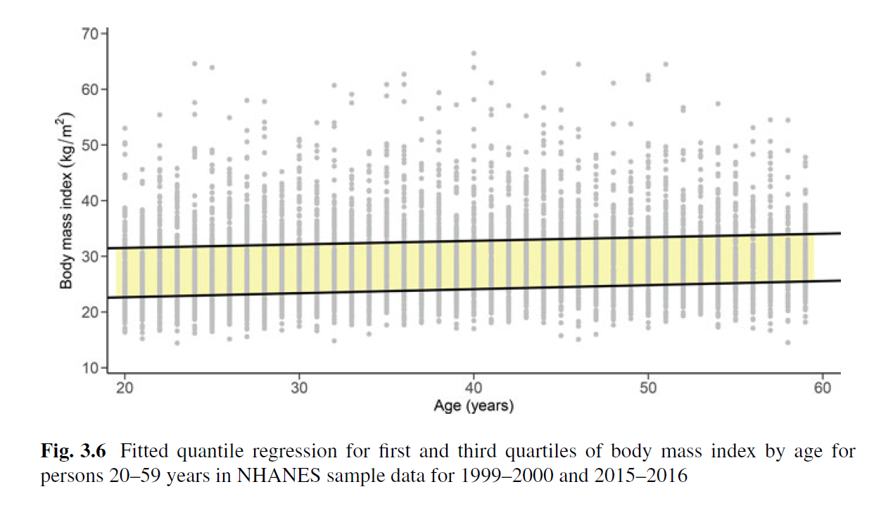
Figure 3.6 shows the fitted values from a quantile regression fit to the first and third quartiles of BMI with age as a covariate.
The fitted model suggests that if linearity holds, then the inter-quartile range is approximately constant across ages.
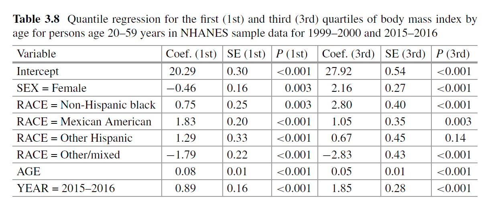
Multiple covariates can be included in a quantile regression model. Table 3.8 shows the results of quantile regression for the first and third quartiles of BMI with (continuous) age, sex, race/ethnicity, and calendar year as covariates.
The interpretation is similar to standard regression analysis. For example, the table suggests that the first quartile of BMI increases by 0.08 for each year of age and the third quartile by 0.05.
The change with calendar year is noticeably larger for the third quartile (1.85) compared to the first quartile (0.89), which is consistent with BMI skewing higher over time.
3.11 Non-parametric Regression
Section 3.10 considered summaries of the distribution of the outcome besides the mean.
Another way that linear regression can be extended beyond the classical setting is to accommodate more flexible forms of the association between covariates and outcomes.
One way to do this while still preserving the linear model is to include polynomial and interaction terms.
A different way is to use smoothing techniques, also known as non-parametric regression.
A linear regression model implies that a one-unit change in any of the covariates is associated with a constant change in the mean of the outcome, regardless of the actual value of the covariate.
When there is a more or less constant trend in the outcome as the covariate increases or decreases, this model provides a simple summary of the underlying relationship.
For a continuous covariate spanning a wide range of values, however, this assumption can be highly restrictive; it may be more reasonable to assume that the mean of the outcome \(Y\) changes slowly and smoothly, but not necessarily linearly, with the covariate \(X\).
An alternative to imposing linearity or indeed any mathematical formula for how \(E(Y)\) changes with \(X\) would be to model the outcome at each value of \(X\) (i.e., for each sub-population defined by X) following the reasoning that close sub-populations (in \(X\)) share similar distributions and means of the outcome \(Y\).
This is the idea motivating smoothing methods and is a version of a non-parametric regression model.
The simplest way to model this type of relationship between the outcome and a continuous covariate is to divide the covariate into pre-specified groups and to calculate the average within each group.
Figure 3.3 showed average BMI levels in groups defined by single ages, but other groupings can be used.
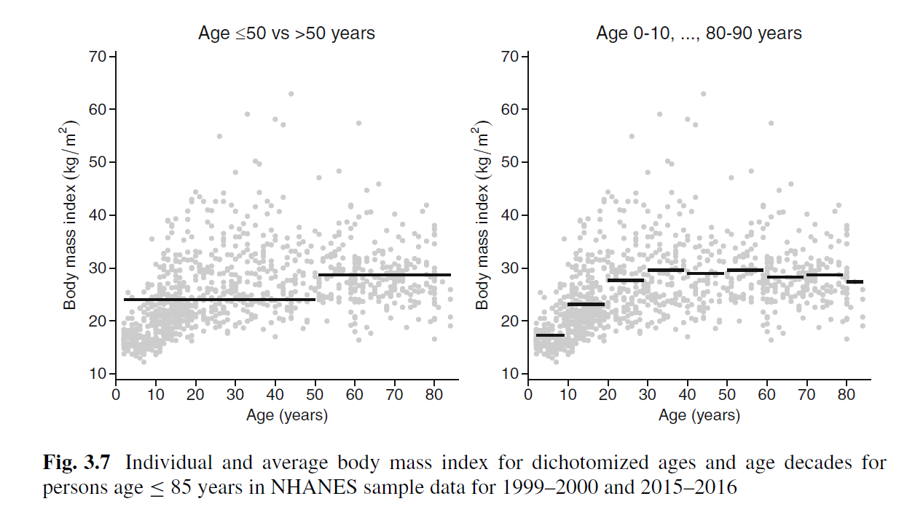
Figure 3.7 illustrates this approach using a random sample of 1000 observations from the NHANES sample for all persons age 85 years.
-The left panel presents the regression line from a dichotomization into two age groups; the right panel presents a more granular breakdown.-As more groups are added, the line better reflects the pattern in the data, particularly the non-linearity among the youngest and oldest persons.-However, the more granular groupings also result in a smaller sample size in each group and hence a less reliable estimate.-The need to pre-specify the groups and the resulting disconnected lines are obvious drawbacks of the grouping approach.Non-parametric regression predicts the mean of \(Y\) for a group with covariate \(X\) by borrowing information from neighboring groups.
-There are many approaches to do this; here we present the simple kernel method that requires minimal mathematical machinery.-The uniform kernel method constructs a window of fixed width around each observed \(X\) value and predicts the mean of \(Y\) at that \(X\) value using all the observations in the window.-As an example, consider estimating the expected BMI of a person aged 42 years using a uniform kernel with window width 10.-This is done by averaging the BMI value of individuals with ages \(42\pm 5\).-Similarly simple averaging is done at each age using the corresponding 10-year window around it.
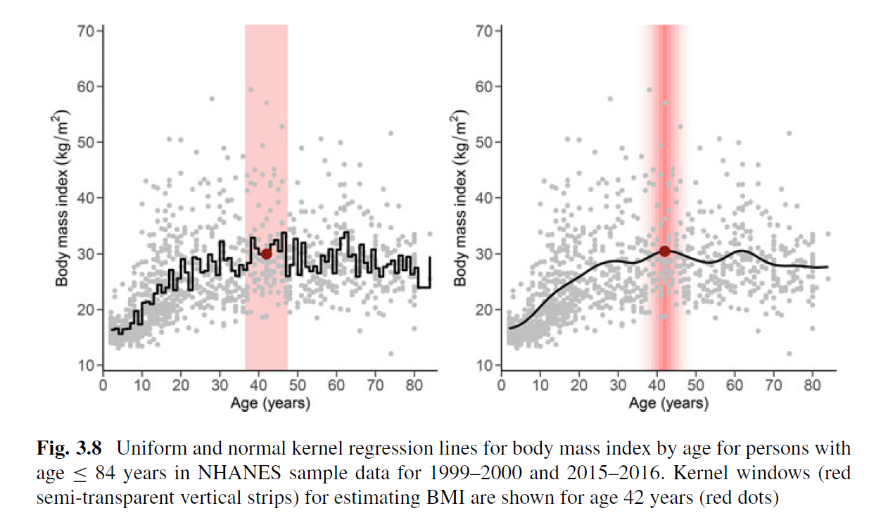
The resulting regression line is shown in Fig. 3.8 along with a semi-transparent rectangle around age 42 and the resulting average (in red).
-In uniform kernel regression, all observations in the window contribute equally to the average.Alternatively, we can weight the contribution of each observation according to its distance from the point of interest, decreasing the contribution of further observations.
-The right panel of Figure 3.8 shows a normal kernel with bandwidth \(\sigma=3\), where the weight of each observation is calculated using a normal density with this standard deviation.-For example, the average at age 42 used a weight 0.133 for persons age 42, 0.126 for persons age 41 or 43, 0.106 for persons age 40 or 44, and so on.The semi-transparent rectangles show the diminishing weight applied to observations that are further away from the point of interest (again, age 42 years).
The kernel method provides a graphical estimate of the relationship between the covariate and the outcome.
-In the current example, BMI increases until adulthood and then flattens.-This is an interesting observation, but the contribution of other covariates, such as sex, race/ethnicity, and calendar year, may change the picture.A major limitation of smoothing methods like the kernel approach is that they become difficult to apply when the number of covariates increases.
This is sometime referred to as the curse of dimensionality, and it occurs because when the covariate space becomes high dimensional, the number of observations within any neighborhood becomes small.
Smoothing methods for individual covariates are often used in exploratory analysis, but they should not be used to actually select the covariates to include in regression models or their functional form.
Kernel smoothing is just one approach used for non-parametric regression; another approach uses splines, which are polynomial functions that are combined to fit the observed data.
A spline-based approach that assumes additivity but relaxes the linearity assumption is known as a generalized additive model.
Non-parametric regression predicts the mean of Y for a group with covariate X by borrowing information from neighboring groups : simple kernel method
The kernel method provides a graphical estimate of the relationship between the covariate and the outcome.
curse of dimensionality: A major limitation of smoothing methods like the kernel approach is that they become difficult to apply when the number of covariates increases.
- when the covariate space becomes high dimensional, the number of observations within any neighborhood becomes small
Other non parametric method: generalized additive model